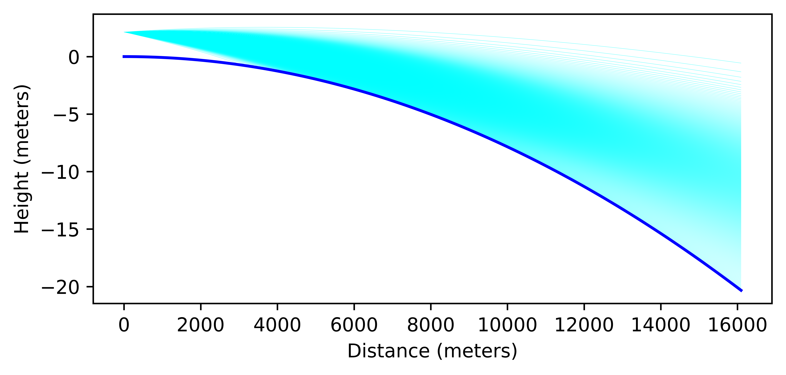

Laser Tests Over Cool Lake¶
In this example we use the refraction calculators to calculate the trajectory of a laser beam over the surface of the earth. In this case we simulate an atmosphere which has cool air near the surface of the earth which creates the effect of bending the laser light down towards the surface of the earth.
1 2 3 4 5 6 7 8 9 10 11 12 13 14 15 16 17 18 19 20 21 22 23 24 25 26 27 28 29 30 31 32 33 34 35 36 37 38 39 40 41 42 43 44 45 46 47 48 49 50 51 52 53 54 55 56 57 58 59 60 61 62 63 64 65 66 67 68 69 70 71 72 73 74 75 | import numpy as np
import matplotlib.pyplot as plt
from refraction_render.calcs import CurveCalc,CurveNoRefraction
from refraction_render.misc import mi_to_m,ft_to_m
from scipy.special import erf
from scipy.optimize import bisect
# guassian spaced angles to replicate the intensity
# of a laser as it exits the device.
def C(x,s):
return 0.5*(1+erf(x/(s*np.sqrt(2.0))))
P = np.linspace(0,1,501)[1:-1]
beam_width = 0.02 #degrees
angles = []
for p in P:
a = bisect(lambda x:C(x,beam_width/2)-p,-80,80)
angles.append(a)
def smooth_f(x,a=1):
return np.abs((x+a*np.logaddexp(x/a,-x/a))/2.0)
def T_prof(h):
e=np.nan_to_num(np.exp(-smooth_f(h/1)**0.5))
return -0.5*e
calc = CurveCalc(T_prof=T_prof)
a_mid = 0.015
d_max = mi_to_m(10)
d = np.linspace(0,d_max,1001)
c = np.sin(d/calc.R0-d_max/(2*calc.R0))
s = np.cos(d/calc.R0-d_max/(2*calc.R0))
y_min = calc.R0*s[0]
angles = np.asarray(angles) - a_mid
n_v = len(angles)
#plotting temperature profile
h = np.linspace(0,50)
plt.plot(calc.atm_model.T(h),h)
plt.xlabel("Temperature (Celcius)")
plt.ylabel("Height (meters)")
plt.savefig("T_prof.png",bbox_inches="tight",dpi=500)
plt.clf()
plt.plot(calc.R0*c,calc.R0*(s-s[0]),color="blue")
sol = calc.solve_ivp(d_max,ft_to_m(7),alpha=angles,
dense_output=True,atol=1.1e-7,rtol=1.1e-7)
r = sol.sol(d)[:n_v].copy()
for rr in r[:]:
mask = rr < 0
i = np.argmax(mask)
if np.any(mask):
plt.plot(c[:i]*(calc.R0+rr[:i]),s[:i]*(calc.R0+rr[:i])-y_min,
color="red",marker="",linewidth=0.1)
else:
plt.plot(c*(calc.R0+rr),s*(calc.R0+rr)-y_min,
color="red",marker="",linewidth=0.1)
plt.axes().set_aspect(300)
plt.ylabel("Height (meters)")
plt.xlabel("Distance (meters)")
plt.savefig("lake_test.png",bbox_inches="tight",dpi=500)
|
Instead of using the renderer built into the package we use Matplotlib to plot the actual trajectories of the rays. The model for the atmosphere uses this Temperature profile:

We show the results of a laser at 7 ft above the water level shining light over 10.3 miles to the observers on the other side.
The conclusion is that the Laser can be seen at all heights on the opposite side of the lake giving some people the impression that the earth is flat however this conclusion is lacking the sophisticated analysis presented here.